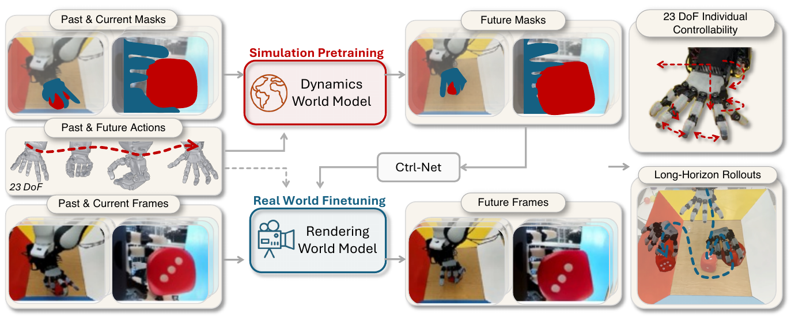

CoRL 2026 · Under Review


Mask2Real-WM: Segmentation Masks as a Sim-to-Real Bridge for Controllable Dexterous World Models
A two-stage action-conditioned world model that decouples dynamics from rendering, using segmentation masks to unlock large-scale synthetic pretraining for 23-DoF dexterous manipulation.

Mask2Real-WM. A Dynamics WM predicts future segmentation masks from past masks and the 23-DoF action sequence (6-DoF end-effector pose + 17-DoF hand joints), pretrained on >50 h of simulation; a Rendering WM paints photorealistic RGB onto the predicted masks, trained on <2.5 h of real demonstrations.